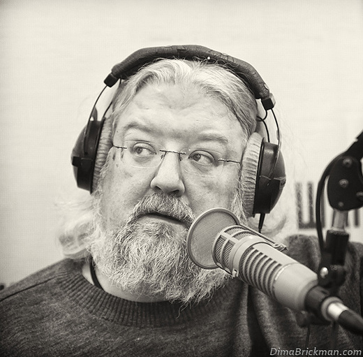
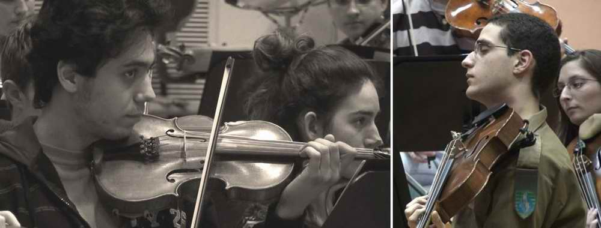
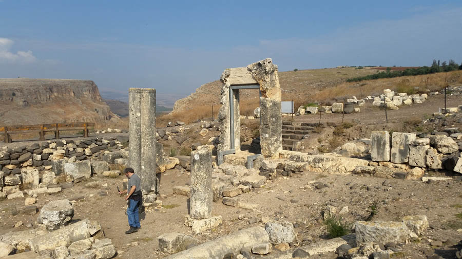

Познер и его еврейское счастье
Андрей Максимов высказывает свое отношение к нашумевшей сериале В.Познера об Израиле.
Остальное - бонус
автор: Андрей Максимов

Сначала пару слов о себе, о том, где я нахожусь, потому что в данном случае это важно.
Я нахожусь в Израиле, в небольшом, но горячо мною любимом городке Петах-Тиква - двадцать минут от Тель-Авива, если без пробок. Пишу книжку. Общаюсь с любимыми людьми. В общем, все в порядке у меня.
А тут выходит фильм Владимира Познера "Еврейское счастье". Дислокация понятна? Я - в Израиле, а по телевизору - фильм про евреев. Надо сказать, что российское телевидение смотрит тут практически все русскоязычное население, которого много.
Так вот, докладываю вам, дорогие читатели "Российской газеты", что такой реакции на фильм я не видел давно. О картине Познера говорят везде и всюду. Все.
Я шел по улице Петах-Тиквы, был узнан, и прямо, можно сказать, посередине проезжей части меня остановил человек, чтобы задать один вопрос: "Ну? И как вам Познер?"
После выхода каждой серии Интернет просто-таки захлебывается от откликов, в большинстве - негативных. Хотя есть и те, кто защищает кино. Но в целом взгляд Познера оказался израильтянам не близок. И с этим, по-моему, стоит разобраться.

Евреи - люди яркие. И страну они построили яркую. Они построили такую страну, которая у каждого своя.
Со стороны может показаться, что для израильтян главное - это бесконечная борьба с палестинцами. Многие из нас, воспитанные в СССР на словосочетании "израильская военщина", продолжают так воспринимать эту страну. Но сами израильтяне живут не войной.
Для меня Израиль - это страна, где люди живут друг другом. Это страна, где каждый человек имеется в виду.
Для меня Израиль - это плакатик в маршрутном такси: "Скажи Господу "спасибо" за наступившее утро. Остальное - бонус". Это водитель автобуса, который вынимает наушник из уха подростка - в Израиле все входят в автобус через переднюю дверь - со словами: "Ты забыл сказать мне "Привет!" Это официантка в ресторане, которая на чистом русском языке говорит мне: "Два израильских блюда не сможете съесть даже вы - у нас очень большие порции". Это всегда улыбающиеся люди на набережной Тель-Авива - редком месте в мире, где, кажется, собрались только счастливые люди. Это девочки-подростки, которые, не боясь, гуляют в вечернем парке.


Я очень часто бываю в Израиле. Здесь живут многие любимые мною люди. И у меня взгляд на эту страну, конечно, не такой, как у Познера. Владимир Владимирович смотрит на Израиль как турист и как журналист, привыкший на все смотреть с политической колокольни.
Имеет право?
Абсолютно. Послушайте, Познер - это один из выдающихся современных тележурналистов, десятками лет своей работы доказавший право на собственный взгляд. Само по себе это интересно. Кто сказал, что взгляд Познера, как и мой, как и чей угодно еще, должен быть единственно верным? Но, мне кажется, уважать взгляд опытного и маститого человека - это единственно правильная позиция.
Познер много раз говорил о том, что он - атеист. Когда атеист рассказывает о Иерусалиме, городе который насквозь пропитан религиозностью, это примерно то же самое, что человек без слуха рассуждающий о Моцарте. А что, разве такой человек не может говорить о Моцарте? Может. Это просто такой взгляд. Свой. Своеобразный. Чем и заслуживающий внимания.
Я был в Израиле во время войны. Я видел, как объединилась в страдании вся страна. Я видел лица руководителей государства, перекошенные болью за гибель молодых солдат. Я видел на улицах плакаты с детскими лицами и надписями "Спасибо, что вы нас защищаете". И когда Познер говорит о том, что Израиль не имеет ничего против конфликтов, потому что получает за это деньги, - я понимаю, как трудно журналисту поверить в то, что иногда геополитические интересы значат для политиков меньше, чем боль граждан своей страны. Но это очень характерная точка зрения. И не только Познеру она принадлежит. И для полноты картины восприятия Израиля в мире ее тоже надо знать.
Я категорически против мелькающей в Интернете точки зрения, что Познер выступает как пропагандист. Если человек высказывает не близкую кому-то точку зрения - это еще вовсе не означает, что он что-то пропагандирует. Познер говорит то, что ему кажется правильным. Как человек, имеющий такую свою позицию. Объективна ли она? А кто знает критерии объективности? Имеет ли человек на нее право? Абсолютно.
Тем более, повторю, это говорит не лишь бы кто, а Познер. Надо уважать, надо прислушаться. Эта позиция выражает точку зрения огромного количества людей, которые а) любят Израиль; б) не очень хорошо его знают. Принимать или нет такую позицию - это выбор каждого человека. Но почему бы не прислушаться?
Познер дал возможность высказаться в своем фильме большому количеству израильтян: от владельца арабского ресторана до члена Кнессета, от премьер-министра Нетаньяху до самого известного сегодня израильского писателя Меира Шалева, который, правда, выступает не как мудрый философ (что он блестяще делает в своих книгах), а как очень резкий политик.
Фильм Познера - это взгляд. Взгляд уважаемого человека, который приехал в страну, попробовал в чем-то разобраться, что-то понять и поделился своим взглядом с другими. Сделал это талантливо и субъективно. (Талант всегда субъективен.)
Как всегда блестящий Иван Ургант помог сделать рассказ об Израиле более живым. И не надо нервничать. Взгляд талантливого человека - это всегда интересно, не менее того. И не более.
От редактора: Один человек заметил: "Есть люди, и, зачастую, выдающиеся люди, которые находятся в постоянной борьбе с Богом. Они полны претензий к Творцу, настолько, что пытаются всех убедить, что они в Него НЕ верят. Если такие люди евреи, они сражаются со своим еврейством. Ведь еврей, это всегда про Бога. И когда они громко говорят: "я совсем-совсем ничего не ощущаю в Иерусалиме!!!", это значит, что Господь тихо говорит в их сердце... И этот голос они хотят заглушить. Ведь нельзя допустить, чтобы в броне появилась трещина, нельзя допустить, чтобы кто-то догадался, что внутри посеяно семя сомнения. Познер из таких..."